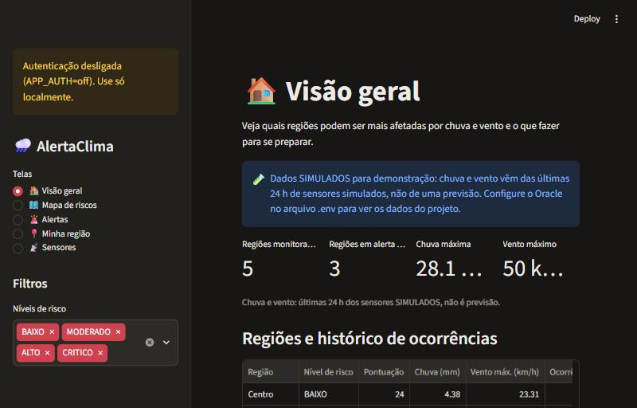
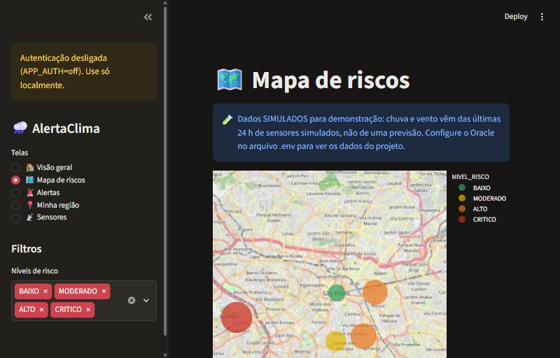
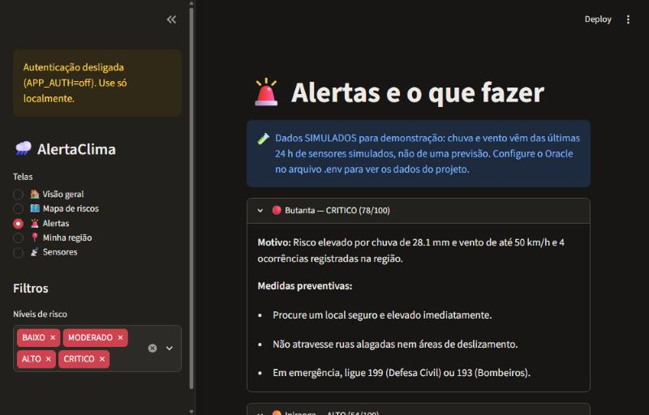
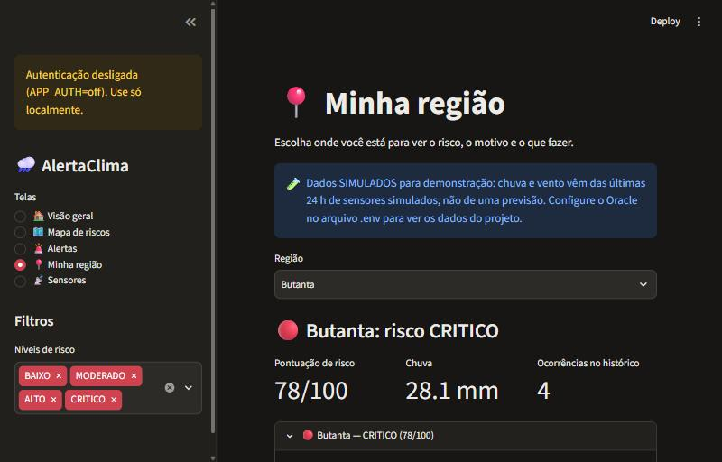
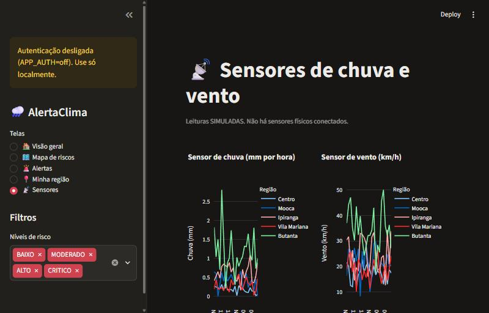

Moradores de bairros de São Paulo que já sofreram enchentes, alagamentos e deslizamentos recebem a previsão do tempo, mas não sabem se a sua região está em risco nem o que fazer. O AlertaClima cruza previsão de chuva e vento com o histórico de ocorrências de cada bairro e mostra um alerta com motivo e medidas preventivas. ODS relacionados: 11 (Cidades e comunidades sustentáveis) e 13 (Ação contra a mudança global do clima).




iot/simulador_sensores.py gera leituras horárias por bairro no formato da tabela
DADOS_CLIMATICOS com TIPO_DADO = 'SENSOR' (já previsto no modelo do Big Data).
Com --gravar, grava no Oracle. Os sensores são mock, como o edital permite.

| Passo | O que acontece |
|---|---|
| 1. Entrada | Sensores de chuva e vento geram leituras (e, com Oracle, a previsão Open-Meteo do módulo de Big Data). |
| 2. Login | O cidadão/operador entra com senha (hash PBKDF2). |
| 3. Processamento | A pontuação de risco usa a mesma fórmula do Big Data: chuva 50%, vento 20%, histórico 30%. |
| 4. Escolha | Em "Minha região", escolhe o bairro. |
| 5. Saída | Vê o nível (BAIXO a CRÍTICO), o motivo e as medidas preventivas. Ex.: Butanta → CRÍTICO 78/100, "chuva de 28.1 mm e vento de até 50 km/h e 4 ocorrências registradas na região". |
CIDADÃO (login)
│
MVP web — 5 telas (app/main.py)
▲ ▲
alertas com motivo e medidas leituras de sensor (IoT)
(app/alertas.py) (iot/simulador_sensores.py)
│ │ TIPO_DADO = 'SENSOR'
Open-Meteo ─► ingestao_climatica.py ─► ORACLE ◄────────────────┘
REGIOES · DADOS_CLIMATICOS
Histórico de ocorrências ───────────► OCORRENCIAS · ANALISE_RISCO
│
processamento/calcular_risco.py
│
dashboard.py (Big Data e visualização)
IA e automação: classificação e texto dos alertas (área de IA).
DevOps: Git + GitHub Actions (testes + build Docker) + login + segredos fora do Git.
Código por módulos: app/ (MVP), iot/ (sensores), processamento/ e sql/ (Big Data),
tests/, docs/, entrega/. Versionado no GitHub (repositório do grupo, branch
aldrin/estrutura-mvp-devops).
GitHub Actions - workflow CI Run: https://github.com/AbnerSLandim/GS2-2026/actions/runs/43866807333 Resultado: completed / success - Run pip install -r requirements.txt: success - Testes: success - Build da imagem Docker: success
Dockerfile com usuário sem privilégio de root e HEALTHCHECK;
.github/workflows/ci.yml roda a cada push: instala dependências, executa os testes e constrói a imagem.
| Prática | Como |
|---|---|
| Autenticação | Senha com hash PBKDF2-SHA256 + sal; comparação em tempo constante. |
| Bloqueio de tentativas | 5 erros bloqueiam o login por 30 s (por sessão). |
| Falha fechada | Sem senha configurada, o app não abre. |
| Proteção de dados e segredos | .env fora do Git e da imagem Docker; senha nunca no código. |
| Erros sem vazamento | Falha do banco mostra aviso genérico; detalhe vai só para o log. |
| ID | Caso | Resultado |
|---|---|---|
| T01 | Pontuação igual à do Big Data | ✅ |
| T02 | Alerta crítico com motivo e medidas | ✅ |
| T03 | Motivo considera o histórico | ✅ |
| T05 | App fechado sem senha | ✅ |
| T06 | Login errado e certo | ✅ |
| T07 | Bloqueio após 5 tentativas | ✅ |
| T09 | As 5 telas abrem sem erro | ✅ |
| T10 | Fluxo "Minha região" completo | ✅ |
| T12 | Regiões iguais ao seed do Oracle | ✅ |
| T14 | Oracle fora do ar não derruba o app | ✅ |
Plano completo em docs/PLANO_DE_TESTES.md; saída da execução em
docs/evidencias/pytest_2026-11-16.txt e no GitHub Actions.
Claude Code (Anthropic) foi usado como apoio para escrever e revisar o código de app/, iot/ e
tests/ e estes documentos. O código foi executado e testado pelo integrante responsável.